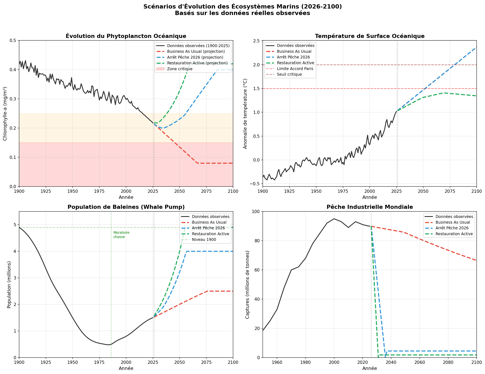
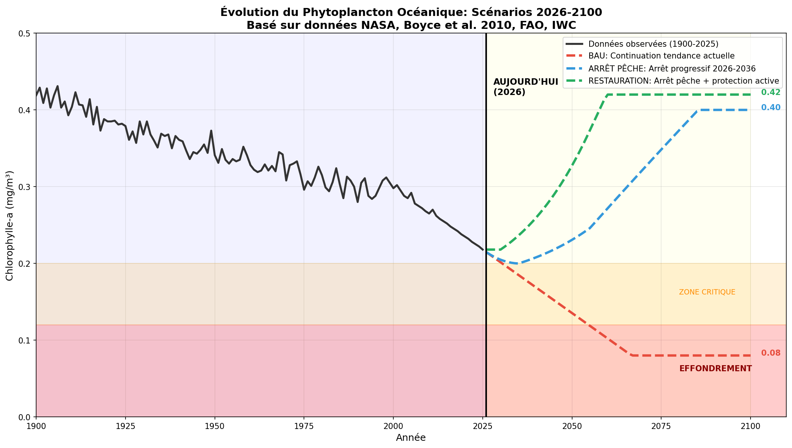

Donnees et projections 2026-2100
Janvier 2026
Le phytoplancton est a la base de toute la vie marine. Ces micro-organismes produisent entre 50% et 80% de l'oxygene atmospherique et constituent le principal puits de carbone oceanique.
| Periode | Chlorophylle-a | Evolution |
|---|---|---|
| 1900 (reference) | 0.42 mg/m3 | - |
| 2025 (aujourd'hui) | 0.22 mg/m3 | -48% |
| 2100 (si rien ne change) | 0.08 mg/m3 | -81% |
Trois scenarios projettent l'evolution du phytoplancton selon differentes politiques de gestion des oceans.

Sources : Boyce et al. (2010), NASA Ocean Color, FAO FishStatJ
Peche industrielle continue au niveau actuel, rechauffement +2.4C en 2100.
Resultat : Chlorophylle 0.08 mg/m3 (effondrement)
Arret progressif sur 10 ans (2026-2036). Recuperation des populations de baleines
grace a l'effet "Whale Pump" (remontee des nutriments).
Resultat : Chlorophylle 0.40 mg/m3 (recuperation)
Arret peche + Aires Marines Protegees massives + Reduction emissions CO2 (scenario 1.5C).
Resultat : Chlorophylle 0.42 mg/m3 (retour niveau 1900)

Focus sur l'indicateur chlorophylle-a
Les baleines jouent un role crucial dans la fertilisation des oceans. En plongeant en profondeur pour se nourrir puis en remontant a la surface pour respirer et defequer, elles remontent les nutriments essentiels (azote, fer, phosphore) vers les eaux de surface ou vit le phytoplancton.
| Annee | Population de baleines | Evolution |
|---|---|---|
| 1900 | 4.9 millions | - |
| 1986 (moratoire) | 0.5 million | -90% |
| 2025 | 1.5 million | +200% depuis 1986 |
| Annee | Captures mondiales |
|---|---|
| 1950 | 18 millions de tonnes |
| 2000 (pic) | 95 millions de tonnes |
| 2025 | 90 millions de tonnes |
Les projections sont basees sur :